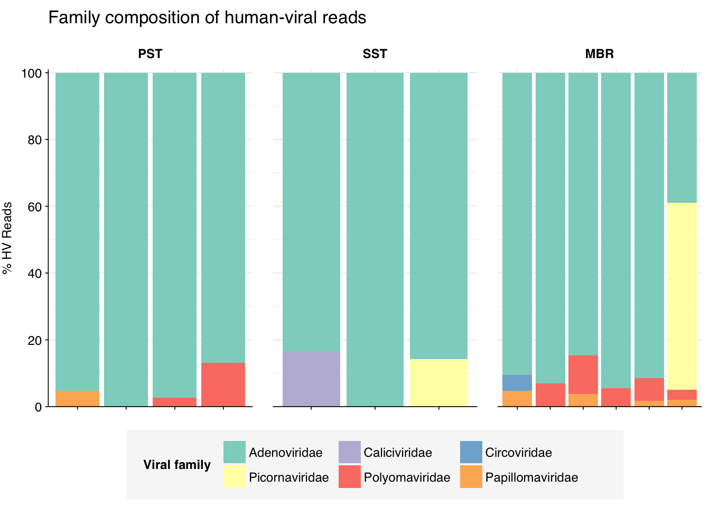
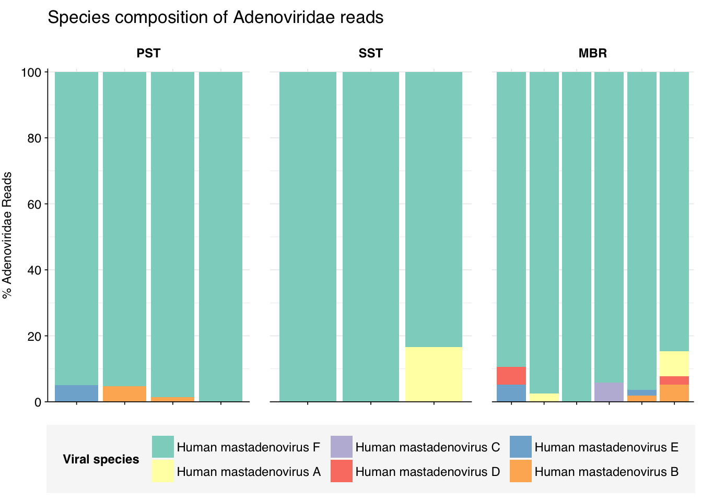
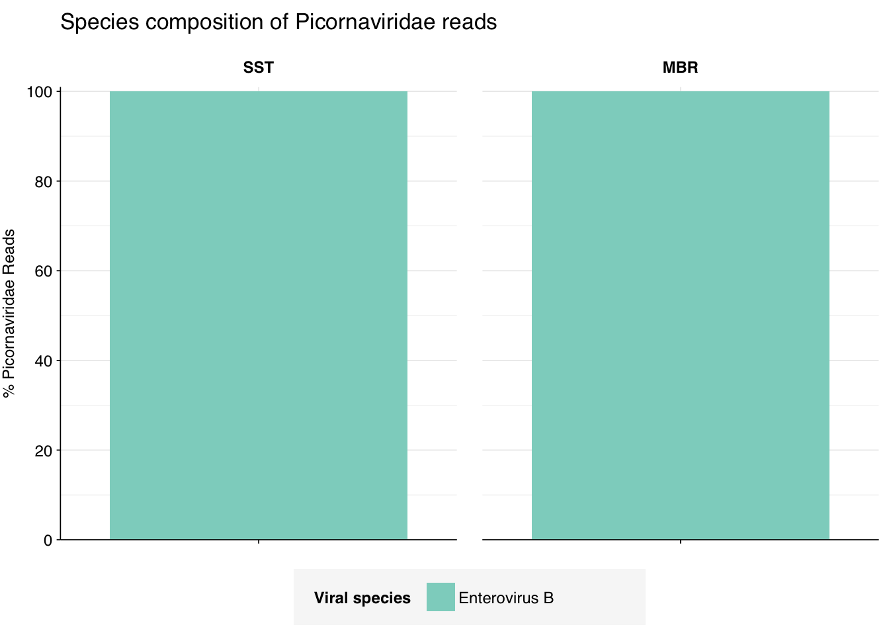
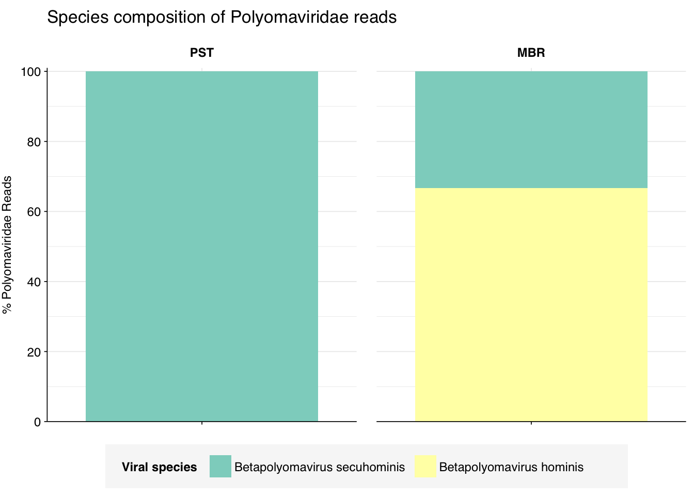

Continuing my analysis of datasets from the P2RA preprint, I analyzed the data from Ng et al. (2019), a study that used DNA sequencing of wastewater samples to characterize the bacterial microbiota and resistome in Singapore. This study used processing methods I haven’t seen before:
All samples passed through “a filter” on-site at the WWTP prior to further processing in lab.
Samples concentrated to 400ml using a Hemoflow dialyzer “via standard bloodline tubing”.
Eluted concentrates then further concentrated by passing through a 0.22um filter and retaining the retentate (NB: this is anti-selecting for viruses).
Sludge samples were instead centrifuged and the pellet kept for further analysis.
After concentration, samples underwent DNA extraction with the PowerSoil DNA Isolation Kit, then underwent library prep and Illumina sequencing with an Illumina HiSeq2500 (2x250bp).
Since this was a bacteria-focused study that used processing methods we expect to select against viruses, we wouldn’t expect to see high viral relative abundances here. Nevertheless, it’s worth seeing what we can see.
The raw data
Samples were collected from six different locations in the treatment plant on six different dates (from October 2016 to August 2017) for a total of 36 samples:
Code
# Importing the data is a bit more complicated this time as the samples are split across three pipeline runsdata_dir<-"../data/2024-05-01_ng"# Data input pathslibraries_path<-file.path(data_dir, "sample-metadata.csv")basic_stats_path<-file.path(data_dir, "qc_basic_stats.tsv.gz")adapter_stats_path<-file.path(data_dir, "qc_adapter_stats.tsv.gz")quality_base_stats_path<-file.path(data_dir, "qc_quality_base_stats.tsv.gz")quality_seq_stats_path<-file.path(data_dir, "qc_quality_sequence_stats.tsv.gz")# Import libraries and extract metadata from sample nameslocs<-c("INF", "PST", "SLUDGE", "SST", "MBR", "WW")libraries_raw<-lapply(libraries_path, read_csv, show_col_types =FALSE)%>%bind_rowslibraries<-libraries_raw%>%mutate(sample_type_long =gsub(" \\(.*", "", sample_type), sample_type_short =ifelse(sample_type_long=="Influent", "INF",sub(".*\\((.*)\\)", "\\1", sample_type)), sample_type_short =factor(sample_type_short, levels=locs))%>%arrange(sample_type_short, date)%>%mutate(sample_type_long =fct_inorder(sample_type_long), sample =fct_inorder(sample))%>%arrange(date)%>%mutate(date =fct_inorder(date))# Make tablecount_samples<-libraries%>%group_by(sample_type_long, sample_type_short)%>%count%>%rename(`Sample Type`=sample_type_long, Abbreviation=sample_type_short)count_samples
These 36 samples yielded 26.6M-74.1M (mean 46.1M) reads per sample, for a total of 1.7B read pairs (830 gigabases of sequence). Read qualities were mostly high but tailed off towards the 3’ end, requiring some trimming. Adapter levels were fairly low but still in need of some trimming. Inferred duplication levels were variable (1-64%, mean 31%), with libraries with lower read depth showing much lower duplicate levels.
The average fraction of reads lost at each stage in the preprocessing pipeline is shown in the following table. As expected given the observed difference in duplication levels, many more reads were lost during deduplication in liquid samples than sludge samples. Conversely, trimming and filtering consistently removed more reads in sludge than in liquid samples, though the effect was less dramatic than for deduplication. Very few reads were lost during ribodepletion, as expected for DNA sequencing libraries.
As before, to assess the high-level composition of the reads, I ran the ribodepleted files through Kraken (using the Standard 16 database) and summarized the results with Bracken. Combining these results with the read counts above gives us a breakdown of the inferred composition of the samples:
# Plot composition of minor componentscomp_minor<-comp%>%filter(classification%in%c("Archaeal", "Viral", "Human", "Other"))palette_minor<-brewer.pal(9, "Set1")[6:9]g_comp_minor<-g_comp_base+geom_col(data=comp_minor, position ="stack", width=1)+scale_y_pc_reads()+scale_fill_manual(values=palette_minor, name ="Classification")g_comp_minor
As in previous DNA datasets, the vast majority of classified reads were bacterial in origin. The fraction of virus reads varied substantially between sample types, averaging <0.01% in influent and final effluent but closer to 0.05% in other sample types. Interestingly (though not particularly relevantly for this analysis), the fraction of archaeal reads was much higher in influent than other sample types, in contrast to Bengtsson-Palme where it was highest in slidge.
As is common for DNA data, viral reads were overwhelmingly dominated by Caudoviricetes phages, though one wet-well sample contained a substantial fraction of Alsuviricetes (a class of mainly plant pathogens that includes Virgaviridae):
Code
# Get Kraken reportsreports_path<-file.path(data_dir, "kraken_reports.tsv.gz")reports<-read_tsv(reports_path, show_col_types =FALSE)# Get viral taxonomyviral_taxa_path<-file.path(data_dir, "viral-taxids.tsv.gz")viral_taxa<-read_tsv(viral_taxa_path, show_col_types =FALSE)# Filter to viral taxakraken_reports_viral<-filter(reports, taxid%in%viral_taxa$taxid)%>%group_by(sample)%>%mutate(p_reads_viral =n_reads_clade/n_reads_clade[1])kraken_reports_viral_cleaned<-kraken_reports_viral%>%inner_join(libraries, by="sample")%>%select(-pc_reads_total, -n_reads_direct, -contains("minimizers"))%>%select(name, taxid, p_reads_viral, n_reads_clade, everything())viral_classes<-kraken_reports_viral_cleaned%>%filter(rank=="C")viral_families<-kraken_reports_viral_cleaned%>%filter(rank=="F")
Next, I investigated the human-infecting virus read content of these unenriched samples. A grand total of 527 reads were identified as putatively human-viral, with half of samples showing 5 or fewer total HV read pairs.
Applying a disjunctive cutoff at S=20 identifies 482 read pairs as human-viral. This gives an overall relative HV abundance of \(2.90 \times 10^{-7}\); on the low end across all datasets I’ve analyzed, though higher than for Bengtsson-Palme:
Code
# Visualizeg_phv_agg<-ggplot(read_counts_agg, aes(x=date, color=sample_type_short))+geom_point(aes(y=p_reads_hv))+scale_y_log10("Relative abundance of human virus reads")+scale_color_st()+theme_kitg_phv_agg
In investigating the taxonomy of human-infecting virus reads, I restricted my analysis to samples with more than 5 HV read pairs total across all viruses, to reduce noise arising from extremely low HV read counts in some samples. 13 samples met this criterion.
At the family level, most samples were overwhelmingly dominated by Adenoviridae, with Picornaviridae, Polyomaviridae and Papillomaviridae making up most of the rest:
Code
# Get viral taxon names for putative HV readsviral_taxa$name[viral_taxa$taxid==249588]<-"Mamastrovirus"viral_taxa$name[viral_taxa$taxid==194960]<-"Kobuvirus"viral_taxa$name[viral_taxa$taxid==688449]<-"Salivirus"viral_taxa$name[viral_taxa$taxid==585893]<-"Picobirnaviridae"viral_taxa$name[viral_taxa$taxid==333922]<-"Betapapillomavirus"viral_taxa$name[viral_taxa$taxid==334207]<-"Betapapillomavirus 3"viral_taxa$name[viral_taxa$taxid==369960]<-"Porcine type-C oncovirus"viral_taxa$name[viral_taxa$taxid==333924]<-"Betapapillomavirus 2"viral_taxa$name[viral_taxa$taxid==687329]<-"Anelloviridae"viral_taxa$name[viral_taxa$taxid==325455]<-"Gammapapillomavirus"viral_taxa$name[viral_taxa$taxid==333750]<-"Alphapapillomavirus"viral_taxa$name[viral_taxa$taxid==694002]<-"Betacoronavirus"viral_taxa$name[viral_taxa$taxid==334202]<-"Mupapillomavirus"viral_taxa$name[viral_taxa$taxid==197911]<-"Alphainfluenzavirus"viral_taxa$name[viral_taxa$taxid==186938]<-"Respirovirus"viral_taxa$name[viral_taxa$taxid==333926]<-"Gammapapillomavirus 1"viral_taxa$name[viral_taxa$taxid==337051]<-"Betapapillomavirus 1"viral_taxa$name[viral_taxa$taxid==337043]<-"Alphapapillomavirus 4"viral_taxa$name[viral_taxa$taxid==694003]<-"Betacoronavirus 1"viral_taxa$name[viral_taxa$taxid==334204]<-"Mupapillomavirus 2"viral_taxa$name[viral_taxa$taxid==334208]<-"Betapapillomavirus 4"viral_taxa$name[viral_taxa$taxid==333928]<-"Gammapapillomavirus 2"viral_taxa$name[viral_taxa$taxid==337039]<-"Alphapapillomavirus 2"viral_taxa$name[viral_taxa$taxid==333929]<-"Gammapapillomavirus 3"viral_taxa$name[viral_taxa$taxid==337042]<-"Alphapapillomavirus 7"viral_taxa$name[viral_taxa$taxid==334203]<-"Mupapillomavirus 1"viral_taxa$name[viral_taxa$taxid==333757]<-"Alphapapillomavirus 8"viral_taxa$name[viral_taxa$taxid==337050]<-"Alphapapillomavirus 6"viral_taxa$name[viral_taxa$taxid==333767]<-"Alphapapillomavirus 3"viral_taxa$name[viral_taxa$taxid==333754]<-"Alphapapillomavirus 10"viral_taxa$name[viral_taxa$taxid==687363]<-"Torque teno virus 24"viral_taxa$name[viral_taxa$taxid==687342]<-"Torque teno virus 3"viral_taxa$name[viral_taxa$taxid==687359]<-"Torque teno virus 20"viral_taxa$name[viral_taxa$taxid==194441]<-"Primate T-lymphotropic virus 2"viral_taxa$name[viral_taxa$taxid==334209]<-"Betapapillomavirus 5"viral_taxa$name[viral_taxa$taxid==194965]<-"Aichivirus B"viral_taxa$name[viral_taxa$taxid==333930]<-"Gammapapillomavirus 4"viral_taxa$name[viral_taxa$taxid==337048]<-"Alphapapillomavirus 1"viral_taxa$name[viral_taxa$taxid==337041]<-"Alphapapillomavirus 9"viral_taxa$name[viral_taxa$taxid==337049]<-"Alphapapillomavirus 11"viral_taxa$name[viral_taxa$taxid==337044]<-"Alphapapillomavirus 5"# Filter samples and add viral taxa informationsamples_keep<-read_counts%>%filter(n_reads_hv>5)%>%pull(sample)mrg_hv_named<-mrg_hv%>%filter(sample%in%samples_keep, hv_status)%>%left_join(viral_taxa, by="taxid")# Discover viral species & genera for HV readsraise_rank<-function(read_db, taxid_db, out_rank="species", verbose=FALSE){# Get higher ranks than search rankranks<-c("subspecies", "species", "subgenus", "genus", "subfamily", "family", "suborder", "order", "class", "subphylum", "phylum", "kingdom", "superkingdom")rank_match<-which.max(ranks==out_rank)high_ranks<-ranks[rank_match:length(ranks)]# Merge read DB and taxid DBreads<-read_db%>%select(-parent_taxid, -rank, -name)%>%left_join(taxid_db, by="taxid")# Extract sequences that are already at appropriate rankreads_rank<-filter(reads, rank==out_rank)# Drop sequences at a higher rank and return unclassified sequencesreads_norank<-reads%>%filter(rank!=out_rank, !rank%in%high_ranks, !is.na(taxid))while(nrow(reads_norank)>0){# As long as there are unclassified sequences...# Promote read taxids and re-merge with taxid DB, then re-classify and filterreads_remaining<-reads_norank%>%mutate(taxid =parent_taxid)%>%select(-parent_taxid, -rank, -name)%>%left_join(taxid_db, by="taxid")reads_rank<-reads_remaining%>%filter(rank==out_rank)%>%bind_rows(reads_rank)reads_norank<-reads_remaining%>%filter(rank!=out_rank, !rank%in%high_ranks, !is.na(taxid))}# Finally, extract and append reads that were excluded during the processreads_dropped<-reads%>%filter(!seq_id%in%reads_rank$seq_id)reads_out<-reads_rank%>%bind_rows(reads_dropped)%>%select(-parent_taxid, -rank, -name)%>%left_join(taxid_db, by="taxid")return(reads_out)}hv_reads_species<-raise_rank(mrg_hv_named, viral_taxa, "species")hv_reads_genus<-raise_rank(mrg_hv_named, viral_taxa, "genus")hv_reads_family<-raise_rank(mrg_hv_named, viral_taxa, "family")
Code
threshold_major_family<-0.02# Count reads for each human-viral familyhv_family_counts<-hv_reads_family%>%group_by(sample, date, sample_type_short, name, taxid)%>%count(name ="n_reads_hv")%>%group_by(sample, date, sample_type_short)%>%mutate(p_reads_hv =n_reads_hv/sum(n_reads_hv))# Identify high-ranking families and group othershv_family_major_tab<-hv_family_counts%>%group_by(name)%>%filter(p_reads_hv==max(p_reads_hv))%>%filter(row_number()==1)%>%arrange(desc(p_reads_hv))%>%filter(p_reads_hv>threshold_major_family)hv_family_counts_major<-hv_family_counts%>%mutate(name_display =ifelse(name%in%hv_family_major_tab$name, name, "Other"))%>%group_by(sample, date, sample_type_short, name_display)%>%summarize(n_reads_hv =sum(n_reads_hv), p_reads_hv =sum(p_reads_hv), .groups="drop")%>%mutate(name_display =factor(name_display, levels =c(hv_family_major_tab$name, "Other")))hv_family_counts_display<-hv_family_counts_major%>%rename(p_reads =p_reads_hv, classification =name_display)# Plotg_hv_family<-g_comp_base+geom_col(data=hv_family_counts_display, position ="stack")+scale_y_continuous(name="% HV Reads", limits=c(0,1.01), breaks =seq(0,1,0.2), expand=c(0,0), labels =function(y)y*100)+scale_fill_manual(values=palette_viral, name ="Viral family")+labs(title="Family composition of human-viral reads")+guides(fill=guide_legend(ncol=4))+theme(plot.title =element_text(size=rel(1.4), hjust=0, face="plain"))g_hv_family

Code
# Get most prominent families for texthv_family_collate<-hv_family_counts%>%group_by(name, taxid)%>%summarize(n_reads_tot =sum(n_reads_hv), p_reads_max =max(p_reads_hv), .groups="drop")%>%arrange(desc(n_reads_tot))
In investigating individual viral families, to avoid distortions from a few rare reads, I restricted myself to samples where that family made up at least 10% of human-viral reads:
Code
threshold_major_species<-0.05taxid_adeno<-10508# Get set of adenoviridae readsadeno_samples<-hv_family_counts%>%filter(taxid==taxid_adeno)%>%filter(p_reads_hv>=0.1)%>%pull(sample)adeno_ids<-hv_reads_family%>%filter(taxid==taxid_adeno, sample%in%adeno_samples)%>%pull(seq_id)# Count reads for each adenoviridae speciesadeno_species_counts<-hv_reads_species%>%filter(seq_id%in%adeno_ids)%>%group_by(sample, date, sample_type_short, name, taxid)%>%count(name ="n_reads_hv")%>%group_by(sample, date, sample_type_short)%>%mutate(p_reads_adeno =n_reads_hv/sum(n_reads_hv))# Identify high-ranking families and group othersadeno_species_major_tab<-adeno_species_counts%>%group_by(name)%>%filter(p_reads_adeno==max(p_reads_adeno))%>%filter(row_number()==1)%>%arrange(desc(p_reads_adeno))%>%filter(p_reads_adeno>threshold_major_species)adeno_species_counts_major<-adeno_species_counts%>%mutate(name_display =ifelse(name%in%adeno_species_major_tab$name, name, "Other"))%>%group_by(sample, date, sample_type_short, name_display)%>%summarize(n_reads_adeno =sum(n_reads_hv), p_reads_adeno =sum(p_reads_adeno), .groups="drop")%>%mutate(name_display =factor(name_display, levels =c(adeno_species_major_tab$name, "Other")))adeno_species_counts_display<-adeno_species_counts_major%>%rename(p_reads =p_reads_adeno, classification =name_display)# Plotg_adeno_species<-g_comp_base+geom_col(data=adeno_species_counts_display, position ="stack")+scale_y_continuous(name="% Adenoviridae Reads", limits=c(0,1.01), breaks =seq(0,1,0.2), expand=c(0,0), labels =function(y)y*100)+scale_fill_manual(values=palette_viral, name ="Viral species")+labs(title="Species composition of Adenoviridae reads")+guides(fill=guide_legend(ncol=3))+theme(plot.title =element_text(size=rel(1.4), hjust=0, face="plain"))g_adeno_species

Code
# Get most prominent species for textadeno_species_collate<-adeno_species_counts%>%group_by(name, taxid)%>%summarize(n_reads_tot =sum(n_reads_hv), p_reads_mean =mean(p_reads_adeno), .groups="drop")%>%arrange(desc(n_reads_tot))
Code
threshold_major_species<-0.1taxid_picorna<-12058# Get set of picornaviridae readspicorna_samples<-hv_family_counts%>%filter(taxid==taxid_picorna)%>%filter(p_reads_hv>=0.1)%>%pull(sample)picorna_ids<-hv_reads_family%>%filter(taxid==taxid_picorna, sample%in%picorna_samples)%>%pull(seq_id)# Count reads for each picornaviridae speciespicorna_species_counts<-hv_reads_species%>%filter(seq_id%in%picorna_ids)%>%group_by(sample, date, sample_type_short, name, taxid)%>%count(name ="n_reads_hv")%>%group_by(sample, date, sample_type_short)%>%mutate(p_reads_picorna =n_reads_hv/sum(n_reads_hv))# Identify high-ranking families and group otherspicorna_species_major_tab<-picorna_species_counts%>%group_by(name)%>%filter(p_reads_picorna==max(p_reads_picorna))%>%filter(row_number()==1)%>%arrange(desc(p_reads_picorna))%>%filter(p_reads_picorna>threshold_major_species)picorna_species_counts_major<-picorna_species_counts%>%mutate(name_display =ifelse(name%in%picorna_species_major_tab$name, name, "Other"))%>%group_by(sample, date, sample_type_short, name_display)%>%summarize(n_reads_picorna =sum(n_reads_hv), p_reads_picorna =sum(p_reads_picorna), .groups="drop")%>%mutate(name_display =factor(name_display, levels =c(picorna_species_major_tab$name, "Other")))picorna_species_counts_display<-picorna_species_counts_major%>%rename(p_reads =p_reads_picorna, classification =name_display)# Plotg_picorna_species<-g_comp_base+geom_col(data=picorna_species_counts_display, position ="stack")+scale_y_continuous(name="% Picornaviridae Reads", limits=c(0,1.01), breaks =seq(0,1,0.2), expand=c(0,0), labels =function(y)y*100)+scale_fill_manual(values=palette_viral, name ="Viral species")+labs(title="Species composition of Picornaviridae reads")+guides(fill=guide_legend(ncol=3))+theme(plot.title =element_text(size=rel(1.4), hjust=0, face="plain"))g_picorna_species

Code
# Get most prominent species for textpicorna_species_collate<-picorna_species_counts%>%group_by(name, taxid)%>%summarize(n_reads_tot =sum(n_reads_hv), p_reads_mean =mean(p_reads_picorna), .groups="drop")%>%arrange(desc(n_reads_tot))
Code
threshold_major_species<-0.1taxid_polyoma<-151341# Get set of polyomaviridae readspolyoma_samples<-hv_family_counts%>%filter(taxid==taxid_polyoma)%>%filter(p_reads_hv>=0.1)%>%pull(sample)polyoma_ids<-hv_reads_family%>%filter(taxid==taxid_polyoma, sample%in%polyoma_samples)%>%pull(seq_id)# Count reads for each polyomaviridae speciespolyoma_species_counts<-hv_reads_species%>%filter(seq_id%in%polyoma_ids)%>%group_by(sample, date, sample_type_short, name, taxid)%>%count(name ="n_reads_hv")%>%group_by(sample, date, sample_type_short)%>%mutate(p_reads_polyoma =n_reads_hv/sum(n_reads_hv))# Identify high-ranking families and group otherspolyoma_species_major_tab<-polyoma_species_counts%>%group_by(name)%>%filter(p_reads_polyoma==max(p_reads_polyoma))%>%filter(row_number()==1)%>%arrange(desc(p_reads_polyoma))%>%filter(p_reads_polyoma>threshold_major_species)polyoma_species_counts_major<-polyoma_species_counts%>%mutate(name_display =ifelse(name%in%polyoma_species_major_tab$name, name, "Other"))%>%group_by(sample, date, sample_type_short, name_display)%>%summarize(n_reads_polyoma =sum(n_reads_hv), p_reads_polyoma =sum(p_reads_polyoma), .groups="drop")%>%mutate(name_display =factor(name_display, levels =c(polyoma_species_major_tab$name, "Other")))polyoma_species_counts_display<-polyoma_species_counts_major%>%rename(p_reads =p_reads_polyoma, classification =name_display)# Plotg_polyoma_species<-g_comp_base+geom_col(data=polyoma_species_counts_display, position ="stack")+scale_y_continuous(name="% Polyomaviridae Reads", limits=c(0,1.01), breaks =seq(0,1,0.2), expand=c(0,0), labels =function(y)y*100)+scale_fill_manual(values=palette_viral, name ="Viral species")+labs(title="Species composition of Polyomaviridae reads")+guides(fill=guide_legend(ncol=3))+theme(plot.title =element_text(size=rel(1.4), hjust=0, face="plain"))g_polyoma_species

Code
# Get most prominent species for textpolyoma_species_collate<-polyoma_species_counts%>%group_by(name, taxid)%>%summarize(n_reads_tot =sum(n_reads_hv), p_reads_mean =mean(p_reads_polyoma), .groups="drop")%>%arrange(desc(n_reads_tot))
Finally, here again are the overall relative abundances of the specific viral genera I picked out manually in my last entry:
This is another dataset with very low HV abundance, arising from lab methods intended to maximize bacterial abundance at the expense of other taxa. Nevertheless, this dataset had higher HV relative abundance than the last one. Interestingly, all three wastewater DNA datasets analyzed so far have exhibited a strong predominance of adenoviruses, and especially human mastadenovirus F, among human-infecting viruses. We’ll see if this pattern persists in the other DNA wastewater datasets I have in the queue.
Source Code
---title: "Workflow analysis of Ng et al. (2019)"subtitle: "Wastewater from Singapore."author: "Will Bradshaw"date: 2024-05-01format: html: code-fold: true code-tools: true code-link: true df-print: pagededitor: visualtitle-block-banner: black---```{r}#| label: preamble#| include: false# Load packageslibrary(tidyverse)library(cowplot)library(patchwork)library(fastqcr)library(RColorBrewer)source("../scripts/aux_plot-theme.R")# GGplot themes and scalestheme_base <- theme_base +theme(aspect.ratio =NULL)theme_rotate <- theme_base +theme(axis.text.x =element_text(hjust =1, angle =45),)theme_kit <- theme_rotate +theme(axis.title.x =element_blank(),)theme_xblank <- theme_kit +theme(axis.text.x =element_blank())tnl <-theme(legend.position ="none")```Continuing my analysis of datasets from the [P2RA preprint](https://doi.org/10.1101/2023.12.22.23300450), I analyzed the data from [Ng et al. (2019)](https://www.frontiersin.org/articles/10.3389/fmicb.2019.00172/full), a study that used DNA sequencing of wastewater samples to characterize the bacterial microbiota and resistome in Singapore. This study used processing methods I haven't seen before:1. All samples passed through “a filter” on-site at the WWTP prior to further processing in lab.2. Samples concentrated to 400ml using a Hemoflow dialyzer “via standard bloodline tubing”.3. Eluted concentrates then further concentrated by passing through a 0.22um filter and retaining the **retentate** (NB: this is anti-selecting for viruses).4. Sludge samples were instead centrifuged and the pellet kept for further analysis.5. After concentration, samples underwent DNA extraction with the PowerSoil DNA Isolation Kit, then underwent library prep and Illumina sequencing with an Illumina HiSeq2500 (2x250bp).Since this was a bacteria-focused study that used processing methods we expect to select against viruses, we wouldn't expect to see high viral relative abundances here. Nevertheless, it's worth seeing what we can see.# The raw dataSamples were collected from six different locations in the treatment plant on six different dates (from October 2016 to August 2017) for a total of 36 samples:```{r}#| warning: false#| label: import-qc-data# Importing the data is a bit more complicated this time as the samples are split across three pipeline runsdata_dir <-"../data/2024-05-01_ng"# Data input pathslibraries_path <-file.path(data_dir, "sample-metadata.csv")basic_stats_path <-file.path(data_dir, "qc_basic_stats.tsv.gz")adapter_stats_path <-file.path(data_dir, "qc_adapter_stats.tsv.gz")quality_base_stats_path <-file.path(data_dir, "qc_quality_base_stats.tsv.gz")quality_seq_stats_path <-file.path(data_dir, "qc_quality_sequence_stats.tsv.gz")# Import libraries and extract metadata from sample nameslocs <-c("INF", "PST", "SLUDGE", "SST", "MBR", "WW")libraries_raw <-lapply(libraries_path, read_csv, show_col_types =FALSE) %>% bind_rowslibraries <- libraries_raw %>%mutate(sample_type_long =gsub(" \\(.*", "", sample_type),sample_type_short =ifelse(sample_type_long =="Influent", "INF",sub(".*\\((.*)\\)", "\\1", sample_type)),sample_type_short =factor(sample_type_short, levels=locs)) %>%arrange(sample_type_short, date) %>%mutate(sample_type_long =fct_inorder(sample_type_long),sample =fct_inorder(sample)) %>%arrange(date) %>%mutate(date =fct_inorder(date))# Make tablecount_samples <- libraries %>%group_by(sample_type_long, sample_type_short) %>% count %>%rename(`Sample Type`=sample_type_long, Abbreviation=sample_type_short)count_samples``````{r}#| label: process-qc-data# Import QC datastages <-c("raw_concat", "cleaned", "dedup", "ribo_initial", "ribo_secondary")import_basic <-function(paths){lapply(paths, read_tsv, show_col_types =FALSE) %>% bind_rows %>%inner_join(libraries, by="sample") %>%arrange(sample_type_short, date, sample) %>%mutate(stage =factor(stage, levels = stages),sample =fct_inorder(sample))}import_basic_paired <-function(paths){import_basic(paths) %>%arrange(read_pair) %>%mutate(read_pair =fct_inorder(as.character(read_pair)))}basic_stats <-import_basic(basic_stats_path)adapter_stats <-import_basic_paired(adapter_stats_path)quality_base_stats <-import_basic_paired(quality_base_stats_path)quality_seq_stats <-import_basic_paired(quality_seq_stats_path)# Filter to raw databasic_stats_raw <- basic_stats %>%filter(stage =="raw_concat")adapter_stats_raw <- adapter_stats %>%filter(stage =="raw_concat")quality_base_stats_raw <- quality_base_stats %>%filter(stage =="raw_concat")quality_seq_stats_raw <- quality_seq_stats %>%filter(stage =="raw_concat")# Get key values for readoutraw_read_counts <- basic_stats_raw %>% ungroup %>%summarize(rmin =min(n_read_pairs), rmax=max(n_read_pairs),rmean=mean(n_read_pairs), rtot =sum(n_read_pairs),btot =sum(n_bases_approx),dmin =min(percent_duplicates), dmax=max(percent_duplicates),dmean=mean(percent_duplicates), .groups ="drop")```These 36 samples yielded 26.6M-74.1M (mean 46.1M) reads per sample, for a total of 1.7B read pairs (830 gigabases of sequence). Read qualities were mostly high but tailed off towards the 3' end, requiring some trimming. Adapter levels were fairly low but still in need of some trimming. Inferred duplication levels were variable (1-64%, mean 31%), with libraries with lower read depth showing much lower duplicate levels.```{r}#| fig-width: 9#| warning: false#| label: plot-basic-stats# Prepare databasic_stats_raw_metrics <- basic_stats_raw %>%select(sample, sample_type_short, date,`# Read pairs`= n_read_pairs,`Total base pairs\n(approx)`= n_bases_approx,`% Duplicates\n(FASTQC)`= percent_duplicates) %>%pivot_longer(-(sample:date), names_to ="metric", values_to ="value") %>%mutate(metric =fct_inorder(metric))# Set up plot templatesscale_fill_st <- purrr::partial(scale_fill_brewer, palette="Set1", name="Sample Type")g_basic <-ggplot(basic_stats_raw_metrics, aes(x=sample, y=value, fill=sample_type_short, group=interaction(sample_type_short,sample))) +geom_col(position ="dodge") +scale_y_continuous(expand=c(0,0)) +expand_limits(y=c(0,100)) +scale_fill_st() +facet_grid(metric~., scales ="free", space="free_x", switch="y") + theme_xblank +theme(axis.title.y =element_blank(),strip.text.y =element_text(face="plain") )g_basic``````{r}#| label: plot-raw-quality# Set up plotting templatesscale_color_st <- purrr::partial(scale_color_brewer, palette="Set1",name="Sample Type")g_qual_raw <-ggplot(mapping=aes(color=sample_type_short, linetype=read_pair, group=interaction(sample,read_pair))) +scale_color_st() +scale_linetype_discrete(name ="Read Pair") +guides(color=guide_legend(nrow=2,byrow=TRUE),linetype =guide_legend(nrow=2,byrow=TRUE)) + theme_base# Visualize adaptersg_adapters_raw <- g_qual_raw +geom_line(aes(x=position, y=pc_adapters), data=adapter_stats_raw) +scale_y_continuous(name="% Adapters", limits=c(0,NA),breaks =seq(0,100,1), expand=c(0,0)) +scale_x_continuous(name="Position", limits=c(0,NA),breaks=seq(0,500,20), expand=c(0,0)) +facet_grid(.~adapter)g_adapters_raw# Visualize qualityg_quality_base_raw <- g_qual_raw +geom_hline(yintercept=25, linetype="dashed", color="red") +geom_hline(yintercept=30, linetype="dashed", color="red") +geom_line(aes(x=position, y=mean_phred_score), data=quality_base_stats_raw) +scale_y_continuous(name="Mean Phred score", expand=c(0,0), limits=c(10,45)) +scale_x_continuous(name="Position", limits=c(0,NA),breaks=seq(0,500,20), expand=c(0,0))g_quality_base_rawg_quality_seq_raw <- g_qual_raw +geom_vline(xintercept=25, linetype="dashed", color="red") +geom_vline(xintercept=30, linetype="dashed", color="red") +geom_line(aes(x=mean_phred_score, y=n_sequences), data=quality_seq_stats_raw) +scale_x_continuous(name="Mean Phred score", expand=c(0,0)) +scale_y_continuous(name="# Sequences", expand=c(0,0))g_quality_seq_raw```# PreprocessingThe average fraction of reads lost at each stage in the preprocessing pipeline is shown in the following table. As expected given the observed difference in duplication levels, many more reads were lost during deduplication in liquid samples than sludge samples. Conversely, trimming and filtering consistently removed more reads in sludge than in liquid samples, though the effect was less dramatic than for deduplication. Very few reads were lost during ribodepletion, as expected for DNA sequencing libraries.```{r}#| label: preproc-tablen_reads_rel <- basic_stats %>%select(sample, sample_type_short, date, stage, percent_duplicates, n_read_pairs) %>%group_by(sample) %>%arrange(sample, stage) %>%mutate(p_reads_retained =replace_na(n_read_pairs /lag(n_read_pairs), 0),p_reads_lost =1- p_reads_retained,p_reads_retained_abs = n_read_pairs / n_read_pairs[1],p_reads_lost_abs =1-p_reads_retained_abs,p_reads_lost_abs_marginal =replace_na(p_reads_lost_abs -lag(p_reads_lost_abs), 0))n_reads_rel_display <- n_reads_rel %>%group_by(`Sample Type`=sample_type_short, Stage=stage) %>%summarize(`% Total Reads Lost (Cumulative)`=paste0(round(min(p_reads_lost_abs*100),1), "-", round(max(p_reads_lost_abs*100),1), " (mean ", round(mean(p_reads_lost_abs*100),1), ")"),`% Total Reads Lost (Marginal)`=paste0(round(min(p_reads_lost_abs_marginal*100),1), "-", round(max(p_reads_lost_abs_marginal*100),1), " (mean ", round(mean(p_reads_lost_abs_marginal*100),1), ")"), .groups="drop") %>%filter(Stage !="raw_concat") %>%mutate(Stage = Stage %>% as.numeric %>%factor(labels=c("Trimming & filtering", "Deduplication", "Initial ribodepletion", "Secondary ribodepletion")))n_reads_rel_display``````{r}#| label: preproc-figures#| warning: false#| fig-height: 4#| fig-width: 6g_stage_base <-ggplot(mapping=aes(x=stage, color=sample_type_short, group=sample)) +scale_color_st() + theme_kit# Plot reads over preprocessingg_reads_stages <- g_stage_base +geom_line(aes(y=n_read_pairs), data=basic_stats) +scale_y_continuous("# Read pairs", expand=c(0,0), limits=c(0,NA))g_reads_stages# Plot relative read losses during preprocessingg_reads_rel <- g_stage_base +geom_line(aes(y=p_reads_lost_abs_marginal), data=n_reads_rel) +scale_y_continuous("% Total Reads Lost", expand=c(0,0), labels =function(x) x*100)g_reads_rel```Data cleaning was very successful at removing adapters and improving read qualities:```{r}#| warning: false#| label: plot-quality#| fig-height: 7g_qual <-ggplot(mapping=aes(color=sample_type_short, linetype=read_pair, group=interaction(sample,read_pair))) +scale_color_st() +scale_linetype_discrete(name ="Read Pair") +guides(color=guide_legend(nrow=2,byrow=TRUE),linetype =guide_legend(nrow=2,byrow=TRUE)) + theme_base# Visualize adaptersg_adapters <- g_qual +geom_line(aes(x=position, y=pc_adapters), data=adapter_stats) +scale_y_continuous(name="% Adapters", limits=c(0,20),breaks =seq(0,50,10), expand=c(0,0)) +scale_x_continuous(name="Position", limits=c(0,NA),breaks=seq(0,140,20), expand=c(0,0)) +facet_grid(stage~adapter)g_adapters# Visualize qualityg_quality_base <- g_qual +geom_hline(yintercept=25, linetype="dashed", color="red") +geom_hline(yintercept=30, linetype="dashed", color="red") +geom_line(aes(x=position, y=mean_phred_score), data=quality_base_stats) +scale_y_continuous(name="Mean Phred score", expand=c(0,0), limits=c(10,45)) +scale_x_continuous(name="Position", limits=c(0,NA),breaks=seq(0,140,20), expand=c(0,0)) +facet_grid(stage~.)g_quality_baseg_quality_seq <- g_qual +geom_vline(xintercept=25, linetype="dashed", color="red") +geom_vline(xintercept=30, linetype="dashed", color="red") +geom_line(aes(x=mean_phred_score, y=n_sequences), data=quality_seq_stats) +scale_x_continuous(name="Mean Phred score", expand=c(0,0)) +scale_y_continuous(name="# Sequences", expand=c(0,0)) +facet_grid(stage~.)g_quality_seq```According to FASTQC, cleaning + deduplication was very effective at reducing measured duplicate levels, which fell from an average of 31% to 6.5%:```{r}#| label: preproc-dedup#| fig-height: 3.5#| fig-width: 6stage_dup <- basic_stats %>%group_by(stage) %>%summarize(dmin =min(percent_duplicates), dmax=max(percent_duplicates),dmean=mean(percent_duplicates), .groups ="drop")g_dup_stages <- g_stage_base +geom_line(aes(y=percent_duplicates), data=basic_stats) +scale_y_continuous("% Duplicates", limits=c(0,NA), expand=c(0,0))g_dup_stagesg_readlen_stages <- g_stage_base +geom_line(aes(y=mean_seq_len), data=basic_stats) +scale_y_continuous("Mean read length (nt)", expand=c(0,0), limits=c(0,NA))g_readlen_stages```# High-level compositionAs before, to assess the high-level composition of the reads, I ran the ribodepleted files through Kraken (using the Standard 16 database) and summarized the results with Bracken. Combining these results with the read counts above gives us a breakdown of the inferred composition of the samples:```{r}#| label: prepare-compositionclassifications <-c("Filtered", "Duplicate", "Ribosomal", "Unassigned","Bacterial", "Archaeal", "Viral", "Human")# Import composition datacomp_path <-file.path(data_dir, "taxonomic_composition.tsv.gz")comp <-read_tsv(comp_path, show_col_types =FALSE) %>%left_join(libraries, by="sample") %>%mutate(classification =factor(classification, levels = classifications))# Summarize compositionread_comp_summ <- comp %>%group_by(sample_type_short, classification) %>%summarize(n_reads =sum(n_reads), .groups ="drop_last") %>%mutate(n_reads =replace_na(n_reads,0),p_reads = n_reads/sum(n_reads),pc_reads = p_reads*100)``````{r}#| label: plot-composition-all#| fig-height: 7#| fig-width: 8# Prepare plotting templatesg_comp_base <-ggplot(mapping=aes(x=sample, y=p_reads, fill=classification)) +facet_wrap(~sample_type_short, scales ="free_x", ncol=3,labeller =label_wrap_gen(multi_line=FALSE, width=20)) + theme_xblankscale_y_pc_reads <- purrr::partial(scale_y_continuous, name ="% Reads",expand =c(0,0), labels =function(y) y*100)# Plot overall compositiong_comp <- g_comp_base +geom_col(data = comp, position ="stack", width=1) +scale_y_pc_reads(limits =c(0,1.01), breaks =seq(0,1,0.2)) +scale_fill_brewer(palette ="Set1", name ="Classification")g_comp# Plot composition of minor componentscomp_minor <- comp %>%filter(classification %in%c("Archaeal", "Viral", "Human", "Other"))palette_minor <-brewer.pal(9, "Set1")[6:9]g_comp_minor <- g_comp_base +geom_col(data=comp_minor, position ="stack", width=1) +scale_y_pc_reads() +scale_fill_manual(values=palette_minor, name ="Classification")g_comp_minor``````{r}#| label: composition-summaryp_reads_summ_group <- comp %>%mutate(classification =ifelse(classification %in%c("Filtered", "Duplicate", "Unassigned"), "Excluded", as.character(classification)),classification =fct_inorder(classification)) %>%group_by(classification, sample, sample_type_short) %>%summarize(p_reads =sum(p_reads), .groups ="drop") %>%group_by(classification, sample_type_short) %>%summarize(pc_min =min(p_reads)*100, pc_max =max(p_reads)*100, pc_mean =mean(p_reads)*100, .groups ="drop")p_reads_summ_prep <- p_reads_summ_group %>%mutate(classification =fct_inorder(classification),pc_min = pc_min %>%signif(digits=2) %>%sapply(format, scientific=FALSE, trim=TRUE, digits=2),pc_max = pc_max %>%signif(digits=2) %>%sapply(format, scientific=FALSE, trim=TRUE, digits=2),pc_mean = pc_mean %>%signif(digits=2) %>%sapply(format, scientific=FALSE, trim=TRUE, digits=2),display =paste0(pc_min, "-", pc_max, "% (mean ", pc_mean, "%)"))p_reads_summ <- p_reads_summ_prep %>%select(`Sample Type`=sample_type_short, Classification=classification, `Read Fraction`=display) %>%arrange(`Sample Type`, Classification)p_reads_summ```As in previous DNA datasets, the vast majority of classified reads were bacterial in origin. The fraction of virus reads varied substantially between sample types, averaging \<0.01% in influent and final effluent but closer to 0.05% in other sample types. Interestingly (though not particularly relevantly for this analysis), the fraction of archaeal reads was much higher in influent than other sample types, in contrast to [Bengtsson-Palme](https://data.securebio.org/wills-public-notebook/notebooks/2024-05-01_bengtsson-palme.html) where it was highest in slidge.As is common for DNA data, viral reads were overwhelmingly dominated by *Caudoviricetes* phages, though one wet-well sample contained a substantial fraction of *Alsuviricetes* (a class of mainly plant pathogens that includes *Virgaviridae*):```{r}#| label: extract-viral-taxa# Get Kraken reportsreports_path <-file.path(data_dir, "kraken_reports.tsv.gz")reports <-read_tsv(reports_path, show_col_types =FALSE)# Get viral taxonomyviral_taxa_path <-file.path(data_dir, "viral-taxids.tsv.gz")viral_taxa <-read_tsv(viral_taxa_path, show_col_types =FALSE)# Filter to viral taxakraken_reports_viral <-filter(reports, taxid %in% viral_taxa$taxid) %>%group_by(sample) %>%mutate(p_reads_viral = n_reads_clade/n_reads_clade[1])kraken_reports_viral_cleaned <- kraken_reports_viral %>%inner_join(libraries, by="sample") %>%select(-pc_reads_total, -n_reads_direct, -contains("minimizers")) %>%select(name, taxid, p_reads_viral, n_reads_clade, everything())viral_classes <- kraken_reports_viral_cleaned %>%filter(rank =="C")viral_families <- kraken_reports_viral_cleaned %>%filter(rank =="F")``````{r}#| label: viral-class-compositionmajor_threshold <-0.02# Identify major viral classesviral_classes_major_tab <- viral_classes %>%group_by(name, taxid) %>%summarize(p_reads_viral_max =max(p_reads_viral), .groups="drop") %>%filter(p_reads_viral_max >= major_threshold)viral_classes_major_list <- viral_classes_major_tab %>%pull(name)viral_classes_major <- viral_classes %>%filter(name %in% viral_classes_major_list) %>%select(name, taxid, sample, sample_type_short, date, p_reads_viral)viral_classes_minor <- viral_classes_major %>%group_by(sample, sample_type_short, date) %>%summarize(p_reads_viral_major =sum(p_reads_viral), .groups ="drop") %>%mutate(name ="Other", taxid=NA, p_reads_viral =1-p_reads_viral_major) %>%select(name, taxid, sample, sample_type_short, date, p_reads_viral)viral_classes_display <-bind_rows(viral_classes_major, viral_classes_minor) %>%arrange(desc(p_reads_viral)) %>%mutate(name =factor(name, levels=c(viral_classes_major_list, "Other")),p_reads_viral =pmax(p_reads_viral, 0)) %>%rename(p_reads = p_reads_viral, classification=name)palette_viral <-c(brewer.pal(12, "Set3"), brewer.pal(8, "Dark2"))g_classes <- g_comp_base +geom_col(data=viral_classes_display, position ="stack", width=1) +scale_y_continuous(name="% Viral Reads", limits=c(0,1.01), breaks =seq(0,1,0.2),expand=c(0,0), labels =function(y) y*100) +scale_fill_manual(values=palette_viral, name ="Viral class")g_classes```# Human-infecting virus reads: validationNext, I investigated the human-infecting virus read content of these unenriched samples. A grand total of 527 reads were identified as putatively human-viral, with half of samples showing 5 or fewer total HV read pairs.```{r}#| label: hv-read-counts# Import HV read datahv_reads_filtered_path <-file.path(data_dir, "hv_hits_putative_filtered.tsv.gz")hv_reads_filtered <-lapply(hv_reads_filtered_path, read_tsv,show_col_types =FALSE) %>%bind_rows() %>%left_join(libraries, by="sample")# Count readsn_hv_filtered <- hv_reads_filtered %>%group_by(sample, date, sample_type_short, seq_id) %>% count %>%group_by(sample, date, sample_type_short) %>% count %>%inner_join(basic_stats %>%filter(stage =="ribo_initial") %>%select(sample, n_read_pairs), by="sample") %>%rename(n_putative = n, n_total = n_read_pairs) %>%mutate(p_reads = n_putative/n_total, pc_reads = p_reads *100)n_hv_filtered_summ <- n_hv_filtered %>% ungroup %>%summarize(n_putative =sum(n_putative), n_total =sum(n_total), .groups="drop") %>%mutate(p_reads = n_putative/n_total, pc_reads = p_reads*100)``````{r}#| label: plot-hv-scores#| warning: false#| fig-width: 8# Collapse multi-entry sequencesrmax <- purrr::partial(max, na.rm =TRUE)collapse <-function(x) ifelse(all(x == x[1]), x[1], paste(x, collapse="/"))mrg <- hv_reads_filtered %>%mutate(adj_score_max =pmax(adj_score_fwd, adj_score_rev, na.rm =TRUE)) %>%arrange(desc(adj_score_max)) %>%group_by(seq_id) %>%summarize(sample =collapse(sample),genome_id =collapse(genome_id),taxid_best = taxid[1],taxid =collapse(as.character(taxid)),best_alignment_score_fwd =rmax(best_alignment_score_fwd),best_alignment_score_rev =rmax(best_alignment_score_rev),query_len_fwd =rmax(query_len_fwd),query_len_rev =rmax(query_len_rev),query_seq_fwd = query_seq_fwd[!is.na(query_seq_fwd)][1],query_seq_rev = query_seq_rev[!is.na(query_seq_rev)][1],classified =rmax(classified),assigned_name =collapse(assigned_name),assigned_taxid_best = assigned_taxid[1],assigned_taxid =collapse(as.character(assigned_taxid)),assigned_hv =rmax(assigned_hv),hit_hv =rmax(hit_hv),encoded_hits =collapse(encoded_hits),adj_score_fwd =rmax(adj_score_fwd),adj_score_rev =rmax(adj_score_rev) ) %>%inner_join(libraries, by="sample") %>%mutate(kraken_label =ifelse(assigned_hv, "Kraken2 HV\nassignment",ifelse(hit_hv, "Kraken2 HV\nhit","No hit or\nassignment"))) %>%mutate(adj_score_max =pmax(adj_score_fwd, adj_score_rev),highscore = adj_score_max >=20)# Plot resultsgeom_vhist <- purrr::partial(geom_histogram, binwidth=5, boundary=0)g_vhist_base <-ggplot(mapping=aes(x=adj_score_max)) +geom_vline(xintercept=20, linetype="dashed", color="red") +facet_wrap(~kraken_label, labeller =labeller(kit =label_wrap_gen(20)), scales ="free_y") +scale_x_continuous(name ="Maximum adjusted alignment score") +scale_y_continuous(name="# Read pairs") + theme_base g_vhist_0 <- g_vhist_base +geom_vhist(data=mrg)g_vhist_0```BLASTing these reads against nt, we find that the pipeline performs well, with only a single high-scoring false-positive read:```{r}#| label: process-blast-data#| warning: false# Import paired BLAST resultsblast_paired_path <-file.path(data_dir, "hv_hits_blast_paired.tsv.gz")blast_paired <-read_tsv(blast_paired_path, show_col_types =FALSE)# Add viral statusblast_viral <-mutate(blast_paired, viral = staxid %in% viral_taxa$taxid) %>%mutate(viral_full = viral & n_reads ==2)# Compare to Kraken & Bowtie assignmentsmatch_taxid <-function(taxid_1, taxid_2){ p1 <-mapply(grepl, paste0("/", taxid_1, "$"), taxid_2) p2 <-mapply(grepl, paste0("^", taxid_1, "/"), taxid_2) p3 <-mapply(grepl, paste0("^", taxid_1, "$"), taxid_2) out <-setNames(p1|p2|p3, NULL)return(out)}mrg_assign <- mrg %>%select(sample, seq_id, taxid, assigned_taxid, adj_score_max)blast_assign <-inner_join(blast_viral, mrg_assign, by="seq_id") %>%mutate(taxid_match_bowtie =match_taxid(staxid, taxid),taxid_match_kraken =match_taxid(staxid, assigned_taxid),taxid_match_any = taxid_match_bowtie | taxid_match_kraken)blast_out <- blast_assign %>%group_by(seq_id) %>%summarize(viral_status =ifelse(any(viral_full), 2,ifelse(any(taxid_match_any), 2,ifelse(any(viral), 1, 0))),.groups ="drop")``````{r}#| label: plot-blast-results#| fig-height: 6#| warning: false# Merge BLAST results with unenriched read datamrg_blast <-full_join(mrg, blast_out, by="seq_id") %>%mutate(viral_status =replace_na(viral_status, 0),viral_status_out =ifelse(viral_status ==0, FALSE, TRUE))# Plotg_vhist_1 <- g_vhist_base +geom_vhist(data=mrg_blast, mapping=aes(fill=viral_status_out)) +scale_fill_brewer(palette ="Set1", name ="Viral status")g_vhist_1```My usual disjunctive score threshold of 20 gave precision, sensitivity, and F1 scores all \>97%:```{r}#| label: plot-f1test_sens_spec <-function(tab, score_threshold){ tab_retained <- tab %>%mutate(retain_score = (adj_score_fwd > score_threshold | adj_score_rev > score_threshold),retain = assigned_hv | retain_score) %>%group_by(viral_status_out, retain) %>% count pos_tru <- tab_retained %>%filter(viral_status_out =="TRUE", retain) %>%pull(n) %>% sum pos_fls <- tab_retained %>%filter(viral_status_out !="TRUE", retain) %>%pull(n) %>% sum neg_tru <- tab_retained %>%filter(viral_status_out !="TRUE", !retain) %>%pull(n) %>% sum neg_fls <- tab_retained %>%filter(viral_status_out =="TRUE", !retain) %>%pull(n) %>% sum sensitivity <- pos_tru / (pos_tru + neg_fls) specificity <- neg_tru / (neg_tru + pos_fls) precision <- pos_tru / (pos_tru + pos_fls) f1 <-2* precision * sensitivity / (precision + sensitivity) out <-tibble(threshold=score_threshold, sensitivity=sensitivity, specificity=specificity, precision=precision, f1=f1)return(out)}range_f1 <-function(intab, inrange=15:45){ tss <- purrr::partial(test_sens_spec, tab=intab) stats <-lapply(inrange, tss) %>% bind_rows %>%pivot_longer(!threshold, names_to="metric", values_to="value")return(stats)}stats_0 <-range_f1(mrg_blast)g_stats_0 <-ggplot(stats_0, aes(x=threshold, y=value, color=metric)) +geom_vline(xintercept=20, color ="red", linetype ="dashed") +geom_line() +scale_y_continuous(name ="Value", limits=c(0,1), breaks =seq(0,1,0.2), expand =c(0,0)) +scale_x_continuous(name ="Adjusted Score Threshold", expand =c(0,0)) +scale_color_brewer(palette="Dark2") + theme_baseg_stats_0stats_0 %>%filter(threshold ==20) %>%select(Threshold=threshold, Metric=metric, Value=value)```# Human-infecting viruses: overall relative abundance```{r}#| label: count-hv-reads# Get raw read countsread_counts_raw <- basic_stats_raw %>%select(sample, sample_type_short, date, n_reads_raw = n_read_pairs)# Get HV read countsmrg_hv <- mrg %>%mutate(hv_status = assigned_hv | highscore) %>%rename(taxid_all = taxid, taxid = taxid_best)read_counts_hv <- mrg_hv %>%filter(hv_status) %>%group_by(sample) %>%count(name="n_reads_hv")read_counts <- read_counts_raw %>%left_join(read_counts_hv, by="sample") %>%mutate(n_reads_hv =replace_na(n_reads_hv, 0))# Aggregateread_counts_grp <- read_counts %>%group_by(date, sample_type_short) %>%summarize(n_reads_raw =sum(n_reads_raw),n_reads_hv =sum(n_reads_hv), .groups="drop") %>%mutate(sample="All samples")read_counts_st <- read_counts_grp %>%group_by(sample, sample_type_short) %>%summarize(n_reads_raw =sum(n_reads_raw),n_reads_hv =sum(n_reads_hv), .groups="drop") %>%mutate(date ="All dates")read_counts_date <- read_counts_grp %>%group_by(sample, date) %>%summarize(n_reads_raw =sum(n_reads_raw),n_reads_hv =sum(n_reads_hv), .groups="drop") %>%mutate(sample_type_short ="All sample types")read_counts_tot <- read_counts_date %>%group_by(sample, sample_type_short) %>%summarize(n_reads_raw =sum(n_reads_raw),n_reads_hv =sum(n_reads_hv), .groups="drop") %>%mutate(date ="All dates")read_counts_agg <-bind_rows(read_counts_grp, read_counts_st, read_counts_date, read_counts_tot) %>%mutate(p_reads_hv = n_reads_hv/n_reads_raw,date =factor(date, levels =c(levels(libraries$date), "All dates")),sample_type_short =factor(sample_type_short, levels =c(levels(libraries$sample_type_short), "All sample types")))```Applying a disjunctive cutoff at S=20 identifies 482 read pairs as human-viral. This gives an overall relative HV abundance of $2.90 \times 10^{-7}$; on the low end across all datasets I've analyzed, though higher than for [Bengtsson-Palme](https://data.securebio.org/wills-public-notebook/notebooks/2024-05-01_bengtsson-palme.html):```{r}#| label: plot-hv-ra#| warning: false# Visualizeg_phv_agg <-ggplot(read_counts_agg, aes(x=date, color=sample_type_short)) +geom_point(aes(y=p_reads_hv)) +scale_y_log10("Relative abundance of human virus reads") +scale_color_st() + theme_kitg_phv_agg``````{r}#| label: ra-hv-past# Collate past RA valuesra_past <-tribble(~dataset, ~ra, ~na_type, ~panel_enriched,"Brumfield", 5e-5, "RNA", FALSE,"Brumfield", 3.66e-7, "DNA", FALSE,"Spurbeck", 5.44e-6, "RNA", FALSE,"Yang", 3.62e-4, "RNA", FALSE,"Rothman (unenriched)", 1.87e-5, "RNA", FALSE,"Rothman (panel-enriched)", 3.3e-5, "RNA", TRUE,"Crits-Christoph (unenriched)", 1.37e-5, "RNA", FALSE,"Crits-Christoph (panel-enriched)", 1.26e-2, "RNA", TRUE,"Prussin (non-control)", 1.63e-5, "RNA", FALSE,"Prussin (non-control)", 4.16e-5, "DNA", FALSE,"Rosario (non-control)", 1.21e-5, "RNA", FALSE,"Rosario (non-control)", 1.50e-4, "DNA", FALSE,"Leung", 1.73e-5, "DNA", FALSE,"Brinch", 3.88e-6, "DNA", FALSE,"Bengtsson-Palme", 8.86e-8, "DNA", FALSE)# Collate new RA valuesra_new <-tribble(~dataset, ~ra, ~na_type, ~panel_enriched,"Ng", 2.90e-7, "DNA", FALSE)# Plotscale_color_na <- purrr::partial(scale_color_brewer, palette="Set1",name="Nucleic acid type")ra_comp <-bind_rows(ra_past, ra_new) %>%mutate(dataset =fct_inorder(dataset))g_ra_comp <-ggplot(ra_comp, aes(y=dataset, x=ra, color=na_type)) +geom_point() +scale_color_na() +scale_x_log10(name="Relative abundance of human virus reads") + theme_base +theme(axis.title.y =element_blank())g_ra_comp```# Human-infecting viruses: taxonomy and compositionIn investigating the taxonomy of human-infecting virus reads, I restricted my analysis to samples with more than 5 HV read pairs total across all viruses, to reduce noise arising from extremely low HV read counts in some samples. 13 samples met this criterion.At the family level, most samples were overwhelmingly dominated by *Adenoviridae*, with *Picornaviridae*, *Polyomaviridae* and *Papillomaviridae* making up most of the rest:```{r}#| label: raise-hv-taxa# Get viral taxon names for putative HV readsviral_taxa$name[viral_taxa$taxid ==249588] <-"Mamastrovirus"viral_taxa$name[viral_taxa$taxid ==194960] <-"Kobuvirus"viral_taxa$name[viral_taxa$taxid ==688449] <-"Salivirus"viral_taxa$name[viral_taxa$taxid ==585893] <-"Picobirnaviridae"viral_taxa$name[viral_taxa$taxid ==333922] <-"Betapapillomavirus"viral_taxa$name[viral_taxa$taxid ==334207] <-"Betapapillomavirus 3"viral_taxa$name[viral_taxa$taxid ==369960] <-"Porcine type-C oncovirus"viral_taxa$name[viral_taxa$taxid ==333924] <-"Betapapillomavirus 2"viral_taxa$name[viral_taxa$taxid ==687329] <-"Anelloviridae"viral_taxa$name[viral_taxa$taxid ==325455] <-"Gammapapillomavirus"viral_taxa$name[viral_taxa$taxid ==333750] <-"Alphapapillomavirus"viral_taxa$name[viral_taxa$taxid ==694002] <-"Betacoronavirus"viral_taxa$name[viral_taxa$taxid ==334202] <-"Mupapillomavirus"viral_taxa$name[viral_taxa$taxid ==197911] <-"Alphainfluenzavirus"viral_taxa$name[viral_taxa$taxid ==186938] <-"Respirovirus"viral_taxa$name[viral_taxa$taxid ==333926] <-"Gammapapillomavirus 1"viral_taxa$name[viral_taxa$taxid ==337051] <-"Betapapillomavirus 1"viral_taxa$name[viral_taxa$taxid ==337043] <-"Alphapapillomavirus 4"viral_taxa$name[viral_taxa$taxid ==694003] <-"Betacoronavirus 1"viral_taxa$name[viral_taxa$taxid ==334204] <-"Mupapillomavirus 2"viral_taxa$name[viral_taxa$taxid ==334208] <-"Betapapillomavirus 4"viral_taxa$name[viral_taxa$taxid ==333928] <-"Gammapapillomavirus 2"viral_taxa$name[viral_taxa$taxid ==337039] <-"Alphapapillomavirus 2"viral_taxa$name[viral_taxa$taxid ==333929] <-"Gammapapillomavirus 3"viral_taxa$name[viral_taxa$taxid ==337042] <-"Alphapapillomavirus 7"viral_taxa$name[viral_taxa$taxid ==334203] <-"Mupapillomavirus 1"viral_taxa$name[viral_taxa$taxid ==333757] <-"Alphapapillomavirus 8"viral_taxa$name[viral_taxa$taxid ==337050] <-"Alphapapillomavirus 6"viral_taxa$name[viral_taxa$taxid ==333767] <-"Alphapapillomavirus 3"viral_taxa$name[viral_taxa$taxid ==333754] <-"Alphapapillomavirus 10"viral_taxa$name[viral_taxa$taxid ==687363] <-"Torque teno virus 24"viral_taxa$name[viral_taxa$taxid ==687342] <-"Torque teno virus 3"viral_taxa$name[viral_taxa$taxid ==687359] <-"Torque teno virus 20"viral_taxa$name[viral_taxa$taxid ==194441] <-"Primate T-lymphotropic virus 2"viral_taxa$name[viral_taxa$taxid ==334209] <-"Betapapillomavirus 5"viral_taxa$name[viral_taxa$taxid ==194965] <-"Aichivirus B"viral_taxa$name[viral_taxa$taxid ==333930] <-"Gammapapillomavirus 4"viral_taxa$name[viral_taxa$taxid ==337048] <-"Alphapapillomavirus 1"viral_taxa$name[viral_taxa$taxid ==337041] <-"Alphapapillomavirus 9"viral_taxa$name[viral_taxa$taxid ==337049] <-"Alphapapillomavirus 11"viral_taxa$name[viral_taxa$taxid ==337044] <-"Alphapapillomavirus 5"# Filter samples and add viral taxa informationsamples_keep <- read_counts %>%filter(n_reads_hv >5) %>%pull(sample)mrg_hv_named <- mrg_hv %>%filter(sample %in% samples_keep, hv_status) %>%left_join(viral_taxa, by="taxid") # Discover viral species & genera for HV readsraise_rank <-function(read_db, taxid_db, out_rank ="species", verbose =FALSE){# Get higher ranks than search rank ranks <-c("subspecies", "species", "subgenus", "genus", "subfamily", "family", "suborder", "order", "class", "subphylum", "phylum", "kingdom", "superkingdom") rank_match <-which.max(ranks == out_rank) high_ranks <- ranks[rank_match:length(ranks)]# Merge read DB and taxid DB reads <- read_db %>%select(-parent_taxid, -rank, -name) %>%left_join(taxid_db, by="taxid")# Extract sequences that are already at appropriate rank reads_rank <-filter(reads, rank == out_rank)# Drop sequences at a higher rank and return unclassified sequences reads_norank <- reads %>%filter(rank != out_rank, !rank %in% high_ranks, !is.na(taxid))while(nrow(reads_norank) >0){ # As long as there are unclassified sequences...# Promote read taxids and re-merge with taxid DB, then re-classify and filter reads_remaining <- reads_norank %>%mutate(taxid = parent_taxid) %>%select(-parent_taxid, -rank, -name) %>%left_join(taxid_db, by="taxid") reads_rank <- reads_remaining %>%filter(rank == out_rank) %>%bind_rows(reads_rank) reads_norank <- reads_remaining %>%filter(rank != out_rank, !rank %in% high_ranks, !is.na(taxid)) }# Finally, extract and append reads that were excluded during the process reads_dropped <- reads %>%filter(!seq_id %in% reads_rank$seq_id) reads_out <- reads_rank %>%bind_rows(reads_dropped) %>%select(-parent_taxid, -rank, -name) %>%left_join(taxid_db, by="taxid")return(reads_out)}hv_reads_species <-raise_rank(mrg_hv_named, viral_taxa, "species")hv_reads_genus <-raise_rank(mrg_hv_named, viral_taxa, "genus")hv_reads_family <-raise_rank(mrg_hv_named, viral_taxa, "family")``````{r}#| label: hv-family#| fig-height: 5#| fig-width: 7threshold_major_family <-0.02# Count reads for each human-viral familyhv_family_counts <- hv_reads_family %>%group_by(sample, date, sample_type_short, name, taxid) %>%count(name ="n_reads_hv") %>%group_by(sample, date, sample_type_short) %>%mutate(p_reads_hv = n_reads_hv/sum(n_reads_hv))# Identify high-ranking families and group othershv_family_major_tab <- hv_family_counts %>%group_by(name) %>%filter(p_reads_hv ==max(p_reads_hv)) %>%filter(row_number() ==1) %>%arrange(desc(p_reads_hv)) %>%filter(p_reads_hv > threshold_major_family)hv_family_counts_major <- hv_family_counts %>%mutate(name_display =ifelse(name %in% hv_family_major_tab$name, name, "Other")) %>%group_by(sample, date, sample_type_short, name_display) %>%summarize(n_reads_hv =sum(n_reads_hv), p_reads_hv =sum(p_reads_hv), .groups="drop") %>%mutate(name_display =factor(name_display, levels =c(hv_family_major_tab$name, "Other")))hv_family_counts_display <- hv_family_counts_major %>%rename(p_reads = p_reads_hv, classification = name_display)# Plotg_hv_family <- g_comp_base +geom_col(data=hv_family_counts_display, position ="stack") +scale_y_continuous(name="% HV Reads", limits=c(0,1.01), breaks =seq(0,1,0.2),expand=c(0,0), labels =function(y) y*100) +scale_fill_manual(values=palette_viral, name ="Viral family") +labs(title="Family composition of human-viral reads") +guides(fill=guide_legend(ncol=4)) +theme(plot.title =element_text(size=rel(1.4), hjust=0, face="plain"))g_hv_family# Get most prominent families for texthv_family_collate <- hv_family_counts %>%group_by(name, taxid) %>%summarize(n_reads_tot =sum(n_reads_hv),p_reads_max =max(p_reads_hv), .groups="drop") %>%arrange(desc(n_reads_tot))```In investigating individual viral families, to avoid distortions from a few rare reads, I restricted myself to samples where that family made up at least 10% of human-viral reads:```{r}#| label: hv-species-adeno#| fig-height: 5#| fig-width: 7threshold_major_species <-0.05taxid_adeno <-10508# Get set of adenoviridae readsadeno_samples <- hv_family_counts %>%filter(taxid == taxid_adeno) %>%filter(p_reads_hv >=0.1) %>%pull(sample)adeno_ids <- hv_reads_family %>%filter(taxid == taxid_adeno, sample %in% adeno_samples) %>%pull(seq_id)# Count reads for each adenoviridae speciesadeno_species_counts <- hv_reads_species %>%filter(seq_id %in% adeno_ids) %>%group_by(sample, date, sample_type_short, name, taxid) %>%count(name ="n_reads_hv") %>%group_by(sample, date, sample_type_short) %>%mutate(p_reads_adeno = n_reads_hv/sum(n_reads_hv))# Identify high-ranking families and group othersadeno_species_major_tab <- adeno_species_counts %>%group_by(name) %>%filter(p_reads_adeno ==max(p_reads_adeno)) %>%filter(row_number() ==1) %>%arrange(desc(p_reads_adeno)) %>%filter(p_reads_adeno > threshold_major_species)adeno_species_counts_major <- adeno_species_counts %>%mutate(name_display =ifelse(name %in% adeno_species_major_tab$name, name, "Other")) %>%group_by(sample, date, sample_type_short, name_display) %>%summarize(n_reads_adeno =sum(n_reads_hv),p_reads_adeno =sum(p_reads_adeno), .groups="drop") %>%mutate(name_display =factor(name_display, levels =c(adeno_species_major_tab$name, "Other")))adeno_species_counts_display <- adeno_species_counts_major %>%rename(p_reads = p_reads_adeno, classification = name_display)# Plotg_adeno_species <- g_comp_base +geom_col(data=adeno_species_counts_display, position ="stack") +scale_y_continuous(name="% Adenoviridae Reads", limits=c(0,1.01), breaks =seq(0,1,0.2),expand=c(0,0), labels =function(y) y*100) +scale_fill_manual(values=palette_viral, name ="Viral species") +labs(title="Species composition of Adenoviridae reads") +guides(fill=guide_legend(ncol=3)) +theme(plot.title =element_text(size=rel(1.4), hjust=0, face="plain"))g_adeno_species# Get most prominent species for textadeno_species_collate <- adeno_species_counts %>%group_by(name, taxid) %>%summarize(n_reads_tot =sum(n_reads_hv), p_reads_mean =mean(p_reads_adeno), .groups="drop") %>%arrange(desc(n_reads_tot))``````{r}#| label: hv-species-picorna#| fig-height: 5#| fig-width: 7threshold_major_species <-0.1taxid_picorna <-12058# Get set of picornaviridae readspicorna_samples <- hv_family_counts %>%filter(taxid == taxid_picorna) %>%filter(p_reads_hv >=0.1) %>%pull(sample)picorna_ids <- hv_reads_family %>%filter(taxid == taxid_picorna, sample %in% picorna_samples) %>%pull(seq_id)# Count reads for each picornaviridae speciespicorna_species_counts <- hv_reads_species %>%filter(seq_id %in% picorna_ids) %>%group_by(sample, date, sample_type_short, name, taxid) %>%count(name ="n_reads_hv") %>%group_by(sample, date, sample_type_short) %>%mutate(p_reads_picorna = n_reads_hv/sum(n_reads_hv))# Identify high-ranking families and group otherspicorna_species_major_tab <- picorna_species_counts %>%group_by(name) %>%filter(p_reads_picorna ==max(p_reads_picorna)) %>%filter(row_number() ==1) %>%arrange(desc(p_reads_picorna)) %>%filter(p_reads_picorna > threshold_major_species)picorna_species_counts_major <- picorna_species_counts %>%mutate(name_display =ifelse(name %in% picorna_species_major_tab$name, name, "Other")) %>%group_by(sample, date, sample_type_short, name_display) %>%summarize(n_reads_picorna =sum(n_reads_hv),p_reads_picorna =sum(p_reads_picorna), .groups="drop") %>%mutate(name_display =factor(name_display, levels =c(picorna_species_major_tab$name, "Other")))picorna_species_counts_display <- picorna_species_counts_major %>%rename(p_reads = p_reads_picorna, classification = name_display)# Plotg_picorna_species <- g_comp_base +geom_col(data=picorna_species_counts_display, position ="stack") +scale_y_continuous(name="% Picornaviridae Reads", limits=c(0,1.01), breaks =seq(0,1,0.2),expand=c(0,0), labels =function(y) y*100) +scale_fill_manual(values=palette_viral, name ="Viral species") +labs(title="Species composition of Picornaviridae reads") +guides(fill=guide_legend(ncol=3)) +theme(plot.title =element_text(size=rel(1.4), hjust=0, face="plain"))g_picorna_species# Get most prominent species for textpicorna_species_collate <- picorna_species_counts %>%group_by(name, taxid) %>%summarize(n_reads_tot =sum(n_reads_hv), p_reads_mean =mean(p_reads_picorna), .groups="drop") %>%arrange(desc(n_reads_tot))``````{r}#| label: hv-species-polyoma#| fig-height: 5#| fig-width: 7threshold_major_species <-0.1taxid_polyoma <-151341# Get set of polyomaviridae readspolyoma_samples <- hv_family_counts %>%filter(taxid == taxid_polyoma) %>%filter(p_reads_hv >=0.1) %>%pull(sample)polyoma_ids <- hv_reads_family %>%filter(taxid == taxid_polyoma, sample %in% polyoma_samples) %>%pull(seq_id)# Count reads for each polyomaviridae speciespolyoma_species_counts <- hv_reads_species %>%filter(seq_id %in% polyoma_ids) %>%group_by(sample, date, sample_type_short, name, taxid) %>%count(name ="n_reads_hv") %>%group_by(sample, date, sample_type_short) %>%mutate(p_reads_polyoma = n_reads_hv/sum(n_reads_hv))# Identify high-ranking families and group otherspolyoma_species_major_tab <- polyoma_species_counts %>%group_by(name) %>%filter(p_reads_polyoma ==max(p_reads_polyoma)) %>%filter(row_number() ==1) %>%arrange(desc(p_reads_polyoma)) %>%filter(p_reads_polyoma > threshold_major_species)polyoma_species_counts_major <- polyoma_species_counts %>%mutate(name_display =ifelse(name %in% polyoma_species_major_tab$name, name, "Other")) %>%group_by(sample, date, sample_type_short, name_display) %>%summarize(n_reads_polyoma =sum(n_reads_hv),p_reads_polyoma =sum(p_reads_polyoma), .groups="drop") %>%mutate(name_display =factor(name_display, levels =c(polyoma_species_major_tab$name, "Other")))polyoma_species_counts_display <- polyoma_species_counts_major %>%rename(p_reads = p_reads_polyoma, classification = name_display)# Plotg_polyoma_species <- g_comp_base +geom_col(data=polyoma_species_counts_display, position ="stack") +scale_y_continuous(name="% Polyomaviridae Reads", limits=c(0,1.01), breaks =seq(0,1,0.2),expand=c(0,0), labels =function(y) y*100) +scale_fill_manual(values=palette_viral, name ="Viral species") +labs(title="Species composition of Polyomaviridae reads") +guides(fill=guide_legend(ncol=3)) +theme(plot.title =element_text(size=rel(1.4), hjust=0, face="plain"))g_polyoma_species# Get most prominent species for textpolyoma_species_collate <- polyoma_species_counts %>%group_by(name, taxid) %>%summarize(n_reads_tot =sum(n_reads_hv), p_reads_mean =mean(p_reads_polyoma), .groups="drop") %>%arrange(desc(n_reads_tot))```Finally, here again are the overall relative abundances of the specific viral genera I picked out manually in my last entry:```{r}#| fig-height: 5#| label: ra-genera#| warning: false# Define reference generapath_genera_rna <-c("Mamastrovirus", "Enterovirus", "Salivirus", "Kobuvirus", "Norovirus", "Sapovirus", "Rotavirus", "Alphacoronavirus", "Betacoronavirus", "Alphainfluenzavirus", "Betainfluenzavirus", "Lentivirus")path_genera_dna <-c("Mastadenovirus", "Alphapolyomavirus", "Betapolyomavirus", "Alphapapillomavirus", "Betapapillomavirus", "Gammapapillomavirus", "Orthopoxvirus", "Simplexvirus","Lymphocryptovirus", "Cytomegalovirus", "Dependoparvovirus")path_genera <-bind_rows(tibble(name=path_genera_rna, genome_type="RNA genome"),tibble(name=path_genera_dna, genome_type="DNA genome")) %>%left_join(viral_taxa, by="name")# Count in each samplemrg_hv_named_all <- mrg_hv %>%left_join(viral_taxa, by="taxid")hv_reads_genus_all <-raise_rank(mrg_hv_named_all, viral_taxa, "genus")n_path_genera <- hv_reads_genus_all %>%group_by(sample, date, sample_type_short, name, taxid) %>%count(name="n_reads_viral") %>%inner_join(path_genera, by=c("name", "taxid")) %>%left_join(read_counts_raw, by=c("sample", "date", "sample_type_short")) %>%mutate(p_reads_viral = n_reads_viral/n_reads_raw)# Pivot out and back to add zero linesn_path_genera_out <- n_path_genera %>% ungroup %>%select(sample, name, n_reads_viral) %>%pivot_wider(names_from="name", values_from="n_reads_viral", values_fill=0) %>%pivot_longer(-sample, names_to="name", values_to="n_reads_viral") %>%left_join(read_counts_raw, by="sample") %>%left_join(path_genera, by="name") %>%mutate(p_reads_viral = n_reads_viral/n_reads_raw)## Aggregate across datesn_path_genera_stype <- n_path_genera_out %>%group_by(name, taxid, genome_type, sample_type_short) %>%summarize(n_reads_raw =sum(n_reads_raw),n_reads_viral =sum(n_reads_viral), .groups ="drop") %>%mutate(sample="All samples", location="All locations",p_reads_viral = n_reads_viral/n_reads_raw,na_type ="DNA")# Plotg_path_genera <-ggplot(n_path_genera_stype,aes(y=name, x=p_reads_viral, color=sample_type_short)) +geom_point() +scale_x_log10(name="Relative abundance") +scale_color_st() +facet_grid(genome_type~., scales="free_y") + theme_base +theme(axis.title.y =element_blank())g_path_genera```# ConclusionThis is another dataset with very low HV abundance, arising from lab methods intended to maximize bacterial abundance at the expense of other taxa. Nevertheless, this dataset had higher HV relative abundance than the last one. Interestingly, all three wastewater DNA datasets analyzed so far have exhibited a strong predominance of adenoviruses, and especially human mastadenovirus F, among human-infecting viruses. We'll see if this pattern persists in the other DNA wastewater datasets I have in the queue.